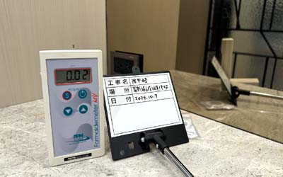
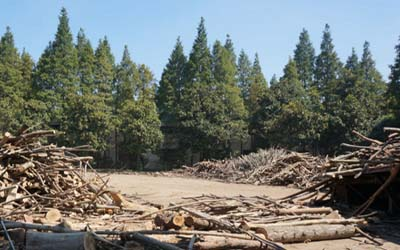
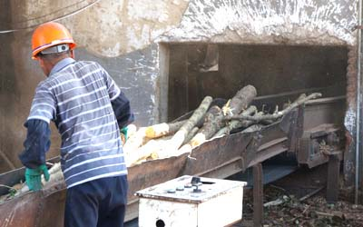
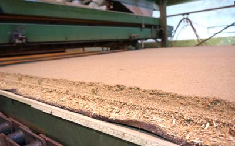
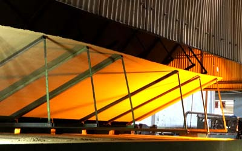
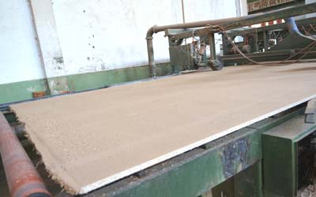
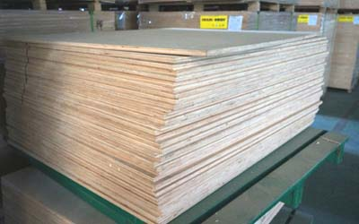
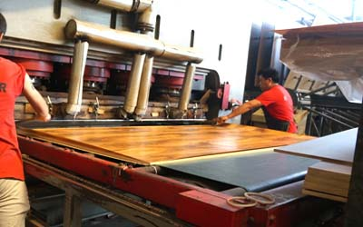
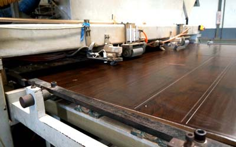
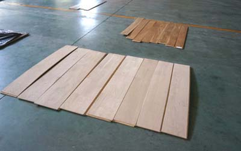

除甲醛
我們具有上千家除甲醛經驗累積，並且為台灣、大陸地區之除甲醛教學公司，甲醛會造成嚴重的健康問題，它是自然界中就含有的物質，所謂除甲醛，精準用字應為降解甲醛至可接受之安全值。因此並沒有所謂零甲醛木作傢俱，不是不實、就是不懂，只要在合理範圍內就是安全的，別被錯誤廣告用詞所誤導。

其實自然界本就有極微量甲醛，而室內甲醛最主要的來源為木材加工製品，平均而言它至少占了百分之70的來源，這部分包含支撐天花板角料、衣櫃、化妝櫃、收納櫃、地板、隔間板材、桌椅等等。
就算是天然純原木傢俱，都會含有極低甲醛，(以天然雲衫而言大約0.01ppm以內，松木0.015ppm以內，其樹木被砍伐之前是幾乎測不到，而砍伐後產生化學變化)更何況是合成加工木，在製成中所產生甲醛以及家具包含某些塑橡膠製品因老化之化學變化所產生之甲醛，只是含量之多寡，勿相信廣告誇大話術。甲醛不可能在現代住宅裡完全沒有，但只要在合理範圍內，都不用過度擔心。

貼皮、漆，也是造成甲醛原因之一，(但目前國內使用之漆或膠，基本上甲醛含量都極低甚至是無甲醛，其揮發物大多為苯類化合物，此類揮發氣體短則數分，長則數日就揮發完，甲醛主要還是來自木材與木材本身使用之黏著劑，市面F1是目前國內宣稱之0甲醛，從標準來看，其實並不是零甲醛，國內室內空氣品質標準為0.1mg/L(>0.08ppm)，國內最好F1(E0)低甲醛木材為0.3mg/L,(0.24ppm)因此可得知，就算使用環保板材，如裝潢過度，且不正確方法使用房屋下，甲醛超標也是很容易的事，因為以上在國內都叫做綠建材零甲醛，環保板材，導致認知不同，引起許多糾紛。

因其染劑所含，或是製成中，其中以沙發內部發泡海綿含量最高，其甲醛至少要3-7年才能散發完，F1高標環保建材的裝修，不代表其甲醛合乎標準，主要取決板材在某一空間的量，在狹小空間，就算用環保板材，超標可能也很高。以我司經驗來說，沙發內平均濃度在0.1-0.5ppm間最為常見。
因此購買沙發前最好對方能有低甲醛發泡棉證明,以及皮製.布製品也是低甲醛含量為佳,以經驗值來說在台灣訂製特別沙發皮.或汽車更換皮椅(非原廠),超標可能性高。
彈簧床床墊也盡量挑選知名之品牌,

最上游之木材製造加工廠奇木材來源有漂流木碎木、雜木、剩料，此部份大都是做纖維木板，先予以曝曬，以及分類。
另一種是原木(生長迅速樹木為主)，做為主要原材料，將其曝曬後並將其表面樹皮拋除，較好之木材則可切除方式，另一種則為將其由外向內切拋為片狀作為夾板之主要木材。

依照不同木材，最佳木材直接切割，作為原木板或原木拼板，此部分木材生長較快度密度低木材通常做為木條為主。
次等木材抛割成平面，此為三角板主要原材料，更次等之雜木送入輸送帶進入至剪搗機器，將其條狀予以絞碎，篩選細木屑碎，再送至不同加工帶，在製作纖維板。

最上等原木在此可添加防撥水等劑，並不需要特別處理可直接出貨，但其產品及少量，在此階段木板需要將其形平整化，因此都需加各類不同化學劑，板類加入含甲醛之定型劑會較多，而雜木部分之小木狀再經多道攪碎木屑狀，篩濾後混和膠水，而後處理壓合時為了不使其變形及強化硬度，里面也都有加上定型樹脂。

此段會經過重壓，將其木材壓實，其黏著劑都會含有甲醛以及其他能增強其結構之物質，如使用環保黏著劑則其壽命不佳，長時間在濕熱環境中易變形，如需壽命較佳，加工成本極昂貴，因此不被採用，黏著劑在此階段會大量釋放(壓合越久受熱越久)。

以原木而言，因切割尺寸固定，其邊大多為未整修為主。
密集板或三角板類會將多餘之毛邊切割處理，四周及邊角整修，大部分長度為240cm以內(除特制品)寬度在180cm，其尺寸在運送較為方便，另外也考慮到變形問題，越大板材因熱漲冷縮，越易變形，一般會再依產品別切割客戶所需之尺寸。

三角板材經前述壓合黏著，大部分為大尺寸板材，壓實碎木壓合重量較高，通常為地板製品，中細木則為傢俱門板裝潢用。

貼皮或上色加工，封邊處理，或是表面使用較高檔之UV Coating烤漆等，經壓合作業，其中貼皮材料大都為塑膠材料，有貼皮處理其甲醛釋放量會慢些，其表面塑材至少符合可抗70度高溫不變形。

包裝後交由傢俱產線依照不同功能之傢俱組裝，或是其板材交由木材銷售商，再售與裝潢公司與傢俱公司。(通常此類木頭密度較低，木材等級不一，甲醛含量每一批較為不固定)

從本實驗可看出，在用環保膠或環保定型劑，經加速高溫高溼下(模擬高溫在35度、濕度在70-80間)，板材就易已變形，這也是為何在木材內會加入三聚氰胺樹脂化合物類，加以定型，以便其有高抗型效果，大約可撐上15-20年不變。

我們具有上千家除甲醛經驗累積，並且為台灣、大陸地區之除甲醛教學公司，甲醛會造成嚴重的健康問題，它是自然界中就含有的物質，所謂除甲醛，精準用字應為降解甲醛至可接受之安全值。因此並沒有所謂零甲醛木作傢俱，不是不實、就是不懂，只要在合理範圍內就是安全的，別被錯誤廣告用詞所誤導。